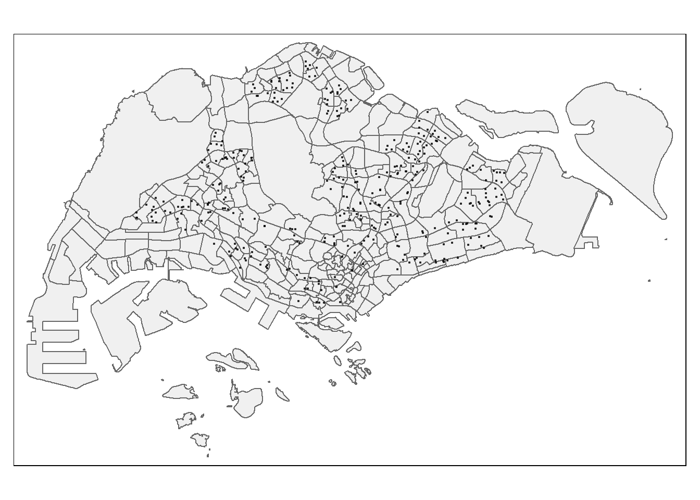

pacman::p_load(sf, tmap, tidyverse, httr)In-class_Ex4: GeoSpatial Data Science with R
Overview
Hands-on experience on the following tasks: - performing geocoding using data downloaded from data.gov.sg - calibrating Geographically Weighted Poisson Regression
Getting Started
The code chunks below installs and launches these R packages into R environment.
Geocoding using SLA API
Geocoding is the process of taking an aspatial description of a location and returning geographic coordinates
The found data will be joined with the initial csv data by using a unique identifier (i.e. POSTAL) common to both data tables. The output data table will then save as an csv file called found.
url<-"https://www.onemap.gov.sg/api/common/elastic/search"
csv<-read_csv("data/aspatial/Generalinformationofschools.csv")
postcodes<-csv$'postal_code'
found<-data.frame()
not_found<-data.frame()
for(postcode in postcodes){
query<-list('searchVal'=postcode, 'returnGeom'='Y', 'getAddrDetails'='Y','pageNum'='1')
res<- GET(url,query=query)
if((content(res)$found)!=0){
found<-rbind(found,data.frame(content(res))[4:13])
} else{
not_found = data.frame(postcode)
}
}Next, combine both found and not_found data.frames into a single data.frame called merged. At the same time, write merged and not_found tibble data.fraems into csv file
merged = merge(csv, found,by.x = 'postal_code', by.y = 'results.POSTAL', all = TRUE)
write.csv(merged,file = "data/aspatial/schools.csv")
write.csv(not_found,file = "data/aspatial/not_found.csv")Do it yourself
- Using Google map, locate the location info of the ungeocoded school (zhenghua secondary) by using its postcode.
- Update the results.LATITUDE and results.LONGITUDE fields of the ungeocoded record in schools.csv manually
- For Zhenghua Secondary update longlat as 1.389279, 103.7651
Converting an aspatial data into a simple feature tibble data.frame
Importing and tidying schools data
Importing and tidying schools data, rename latitude & longitude and retain
schools<-read_csv("data/aspatial/schools.csv") %>%
rename(latitude = "results.LATITUDE",
longitude = "results.LONGITUDE")%>%
select(postal_code, school_name, latitude, longitude)New names:
Rows: 350 Columns: 41
── Column specification
──────────────────────────────────────────────────────── Delimiter: "," chr
(35): school_name, url_address, address, telephone_no, telephone_no_2, f... dbl
(6): ...1, postal_code, results.X, results.Y, results.LATITUDE, results...
ℹ Use `spec()` to retrieve the full column specification for this data. ℹ
Specify the column types or set `show_col_types = FALSE` to quiet this message.
• `` -> `...1`Converting an aspatial data into sf tibble data.frame
Convert aspatial data into a simple feature tibble data.frame called schools_sf
schools_sf <- st_as_sf(schools,
coords = c("longitude","latitude"),
crs=4326) %>%
st_transform(crs = 3414)Plotting a point simple feature layer
To ensure schools_sf tibble data.frame has been projected and converted correctly, plot the schools point data for visual inspection.
create a point symbol map showing the location of
mpsz = st_read(dsn = "data/geospatial", layer = "MPSZ-2019")%>%
st_transform(crs = 3414)Reading layer `MPSZ-2019' from data source
`C:\jayexx\ISSS624\In-class_Exercises\In-class_Ex4\data\geospatial'
using driver `ESRI Shapefile'
Simple feature collection with 332 features and 6 fields
Geometry type: MULTIPOLYGON
Dimension: XY
Bounding box: xmin: 103.6057 ymin: 1.158699 xmax: 104.0885 ymax: 1.470775
Geodetic CRS: WGS 84tmap_mode("plot")tmap mode set to plottingtm_shape(mpsz)+
tmap_options(check.and.fix = TRUE) +
tm_polygons(alpha = 0.4) +
tm_shape(schools_sf) +
tm_dots(alpha = 0.6) +
tm_view(set.zoom.limits = c(11,14))Warning: The shape mpsz is invalid. See sf::st_is_valid
Preparing
count the number of schools within each planning subzone by using appropriate sf function
mpsz$'SCHOOL_COUNT'<-lengths(
st_intersects(
mpsz, schools_sf))Good practice to examine summary stat of derived variable.
compute and display summary stat of sch_count field.
summary(mpsz$SCHOOL_COUNT) Min. 1st Qu. Median Mean 3rd Qu. Max.
0.000 0.000 0.000 1.054 2.000 12.000 business_sf = st_read(dsn = "data/geospatial", layer = "Business")%>%
st_transform(crs = 3414)Reading layer `Business' from data source
`C:\jayexx\ISSS624\In-class_Exercises\In-class_Ex4\data\geospatial'
using driver `ESRI Shapefile'
Simple feature collection with 6550 features and 3 fields
Geometry type: POINT
Dimension: XY
Bounding box: xmin: 3669.148 ymin: 25408.41 xmax: 47034.83 ymax: 50148.54
Projected CRS: SVY21 / Singapore TMtmap_options(check.and.fix = TRUE)
tm_shape(mpsz) + #plot outline
tm_polygons() +
tm_shape(business_sf) + #plot specific retail outlets
tm_dots()Warning: The shape mpsz is invalid. See sf::st_is_valid
Data Integration and Wrangling
flow_data <- read_rds("data/rds/flow_data_tidy.rds")%>%
st_transform(crs = 3414)mpsz_tidy <- st_intersection(flow_data, mpsz) %>%
select(SUBZONE_N, SUBZONE_C) %>%
st_drop_geometry()Warning: attribute variables are assumed to be spatially constant throughout
all geometriesappend mpsz_tidy
flow_data <- flow_data %>%
left_join(mpsz_tidy,
by = c("DESTIN_SZ" = "SUBZONE_C"))Warning in sf_column %in% names(g): Detected an unexpected many-to-many relationship between `x` and `y`.
ℹ Row 1 of `x` matches multiple rows in `y`.
ℹ Row 73392 of `y` matches multiple rows in `x`.
ℹ If a many-to-many relationship is expected, set `relationship =
"many-to-many"` to silence this warning.Checking for variables with zero values
Since Poisson Regression is based on log and log 0 is undefined, need to ensure no 0 values in explanatory variables
Compute summary stats of all variables as follows.
summary(flow_data) ORIGIN_SZ DESTIN_SZ MORNING_PEAK dist
Length:8071749 Length:8071749 Min. : 1.0 Min. : 50
Class :character Class :character 1st Qu.: 15.0 1st Qu.: 3508
Mode :character Mode :character Median : 75.0 Median : 6118
Mean : 875.4 Mean : 6822
3rd Qu.: 387.0 3rd Qu.: 9521
Max. :232187.0 Max. :26136
ORIGIN_AGE7_12 ORIGIN_AGE13_24 ORIGIN_AGE25_64 DESTIN_AGE7_12
Min. : 0.99 Min. : 0.99 Min. : 0.99 Min. : 0.99
1st Qu.: 260.00 1st Qu.: 620.00 1st Qu.: 2320.00 1st Qu.: 310.00
Median : 700.00 Median : 1340.00 Median : 6810.00 Median : 750.00
Mean :1000.94 Mean : 2197.94 Mean :10250.59 Mean :1007.34
3rd Qu.:1450.00 3rd Qu.: 3220.00 3rd Qu.:15480.00 3rd Qu.:1530.00
Max. :6340.00 Max. :16380.00 Max. :74610.00 Max. :6340.00
DESTIN_AGE13_24 DESTIN_AGE25_64 SCHOOL_COUNT RETAIL_COUNT
Min. : 0.99 Min. : 0.99 Min. : 0.990 Min. : 0.99
1st Qu.: 690.00 1st Qu.: 2780.00 1st Qu.: 0.990 1st Qu.: 1.00
Median : 1550.00 Median : 7130.00 Median : 1.000 Median : 3.00
Mean : 2205.48 Mean :10490.09 Mean : 2.017 Mean : 15.88
3rd Qu.: 3220.00 3rd Qu.:15850.00 3rd Qu.: 3.000 3rd Qu.: 13.00
Max. :16380.00 Max. :74610.00 Max. :12.000 Max. :307.00
SUBZONE_N geometry
Length:8071749 LINESTRING :8071749
Class :character epsg:3414 : 0
Mode :character +proj=tmer...: 0
report above reveals that all of the variables have a min >0
If required the following examnple code can be used to replace with 0.99
flow_data$SCHOOL_COUNT <- ifelse(
flow_data$SCHOOL_COUNT == 0,
0.99, flow_data$SCHOOL_COUNT)